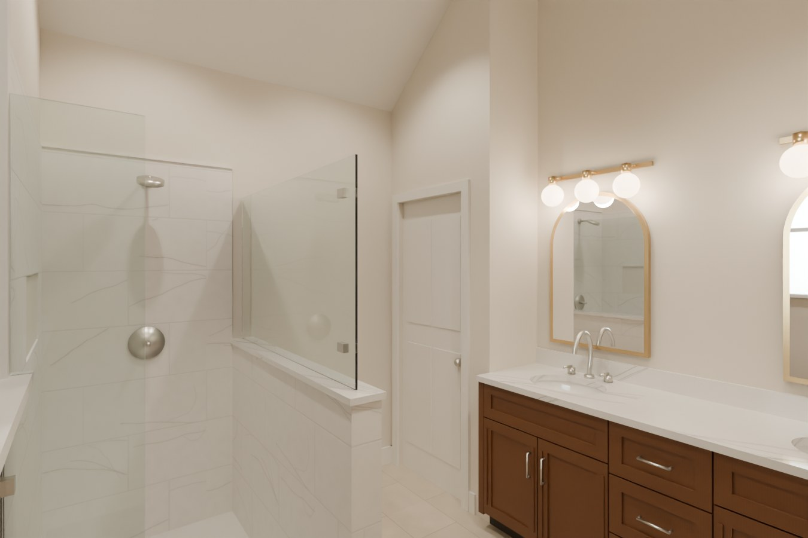
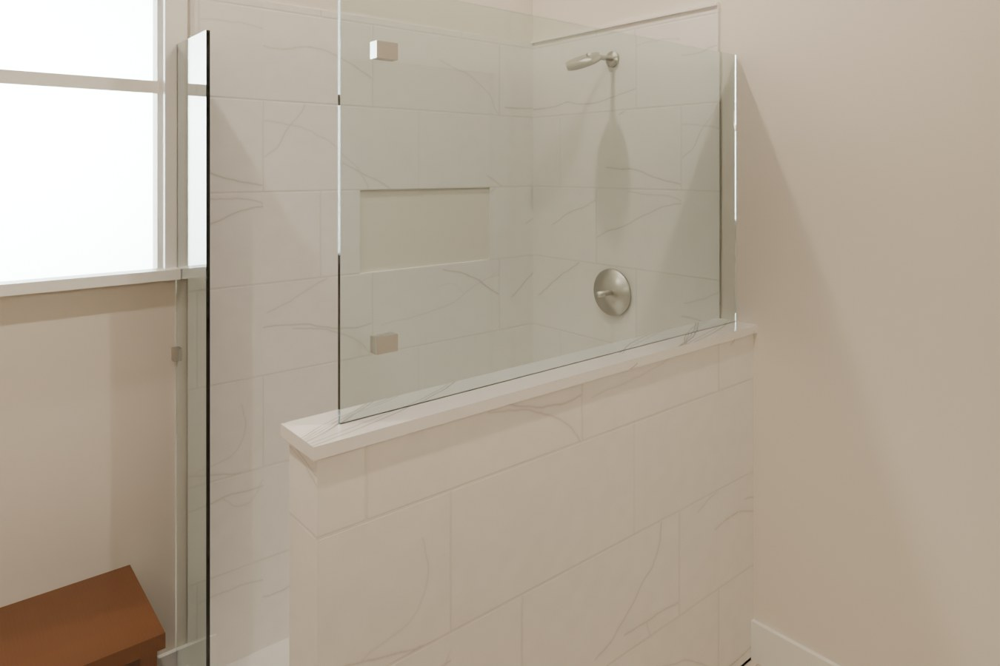
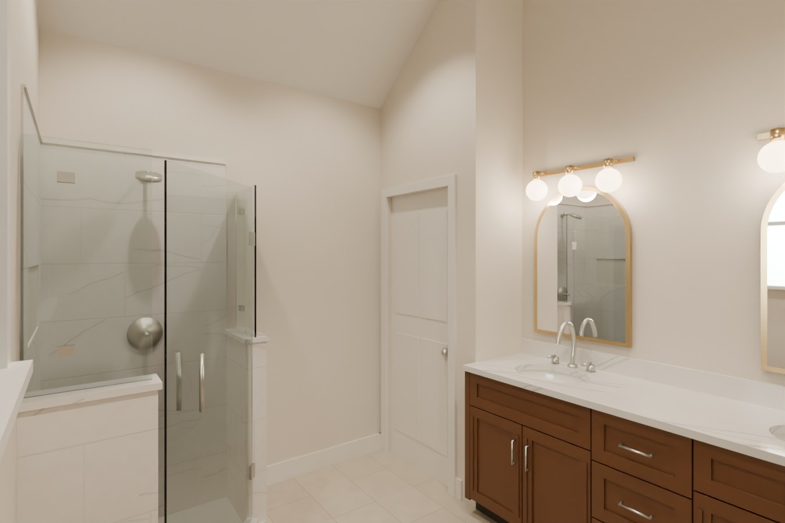
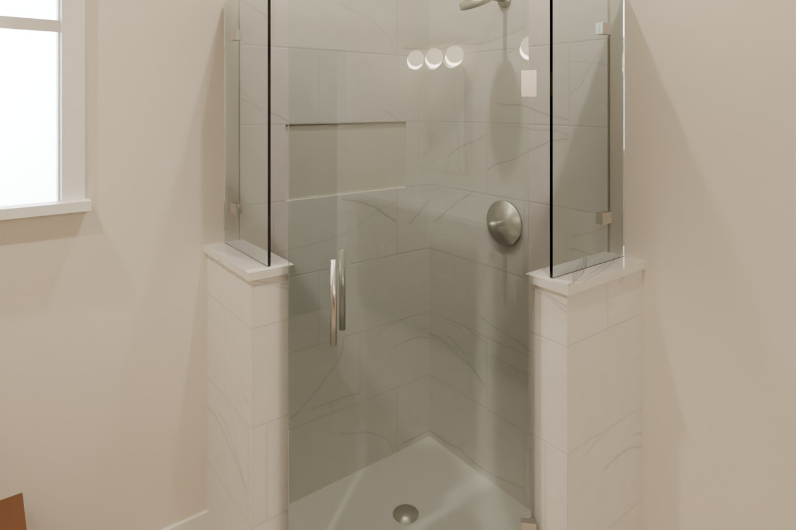

Walk through the new bathroom
Look around and walk the room in 3D, built from the scan of your bathroom. Switch between the two shower options and turn the styling on and off.

How it all comes together
Your vaulted ceiling stays, with recessed lights. Warm limestone-look 12×24 LVT running the length of the vanity, soft warm white walls, and a new Brown Sugar vanity that runs wall to wall. The old tub spot under the window opens up.

Shower Option 1 — open walk-in
The old stall comes out and a 42×60 shower takes over that whole corner, on an acrylic shower base. A tiled knee wall with a stone cap and frameless glass runs along the long side, and you step in over a low threshold on the short end, with no door. Marble-look 12×24 matte porcelain on the walls, laid horizontally, with a recessed niche and brushed nickel trim.
Neo-angle shower
Same corner, shaped differently: a 42×42 neo-angle acrylic base with short tiled knee walls on both sides, glass on top, and a glass door on the angled front. It's a little smaller inside than Option 1, but it opens up more floor in front of the vanity and by the window.

Option 2 — the room
The angled door faces the middle of the room, so the walkway in front of the vanity stays wide.

Option 2 — the shower
Knee walls with a stone cap and fixed glass on both returns, a frameless glass door on the angle, the same marble-look wall tile and recessed niche.

The vanity wall
A new double vanity runs wall to wall in a warm Brown Sugar stain, with a center drawer bank, a Golden Beach quartz top (soft white with gray and gold veining) with undermount sinks, arched mirrors, and warm brass 3-light fixtures.
What's in the design
- Removed
- Garden tub and the existing stall shower, down to the studs
- Shower
- 42×60 walk-in shower on an acrylic shower base; tiled knee wall with stone cap and fixed frameless glass; step-in over a low threshold on the short end; recessed niche
- Shower walls
- Daltile Marble Manor Calacatta 12×24 matte porcelain, laid horizontally, about 7 feet high
- Floor
- Warm limestone-look 12×24 LVT, running parallel to the vanity
- Vanity
- Wall-to-wall double vanity, KraftMaid Keagan door in Brown Sugar stain, Golden Beach quartz top, undermount sinks
- Fixtures
- Brushed nickel faucets and shower trim
- Lighting
- Recessed lights in the vaulted ceiling, including the shower; 3-light fixtures over each mirror
- Walls
- Soft warm white paint